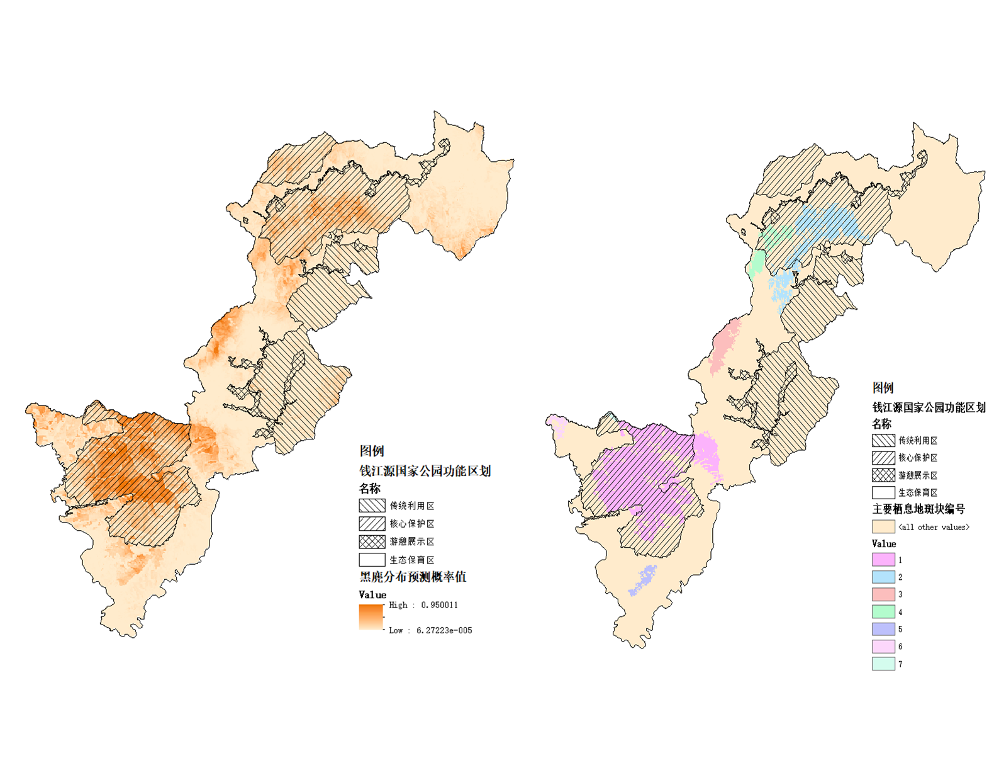
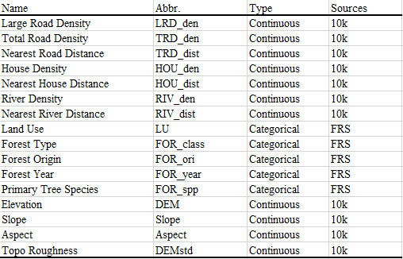
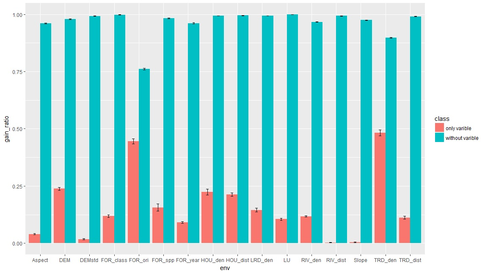
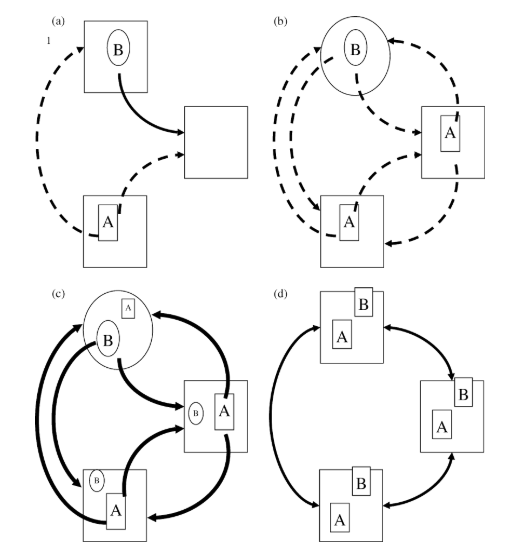

After a long travel from Beijing China to Madison WI, I finally arrived and overcame the jetlag of 13 hours. This week’s find is part of my new project doing for Qianjiangyuan National Park and highly related to my MS project, coexistence of two ungulates in South-East China. I used camera trapping occurrence data and environmental layers with Ecological Niche Model(ENM, actually, MaxEnt), to evaluate whether core region of the National Park could cover the distribution area of its target species, Black Muntjac (Muntiacus crinifrons).
Model has good performance according to 5-fold cross validation and ROC-AUC test(0.859, se=0.03). For the primary question, whether it can be well conserved by the legislation about core area of Nation Parks, the short answer according to my result is: yes. 64.4% of the predicted distribution area was in core area while 34.8% of it was in restoration area, means tourism (which is great important for National Parks and stackholders) won’t occur in the distribution area of black muntjac.

But what is the most important environmental factors for this prediction? The next table is all the environmental layers I used to predict the distribution:

Jackknife test may give us insight about the most important factor(s).

Jackknife results showed that, Total Road Density is the most informative single factor, which can get 48.3%(se=1.3%) of the total gain, Forest Origin is the most necessary factor for model performance, without it model gain will reduce to 76.1%(se=0.42%) of the total gain, meanwhile, Forest Origin is also a good single factor, which can get 44.5%(se=1.2%) of the total gain, means forest origin is important for the model in both way. Reaction curve showed black muntjacs avoid high road density and like old growth forest.
But the problem is, as we could see, distribution is patchy, and the model was a niche based model, however, in pachy landscape, niche differentiation may be not only way for species to coexist, for example, Leibold et al. 2004‘s 4 paradigms for two species coexist in pachy landscape:

(a) patch-dynamics, (b) species-sorting, (c) mass-effects and (d) neutral. In (a) the patch dynamics paradigm is shown with conditions that permit coexistence: a competition-colonization trade-off is illustrated with species A being a superior competitor but species B being a superior colonist; the third patch is vacant and could become occupied by either species. In (b) species are separated into spatial niches and dispersal is not sufficient to alter their distribution. In (c) mass effects cause species to be present in both source and sink habitats; the smaller letters and symbols indicate smaller sized populations. In (d) all species are currently present in all patches; species would gradually be lost from the region and would be replaced by speciation. (Leibold et al. 2004)
How to test different hypothesis of coexistence in patchy landscape remains a challenge for my MS’s project.